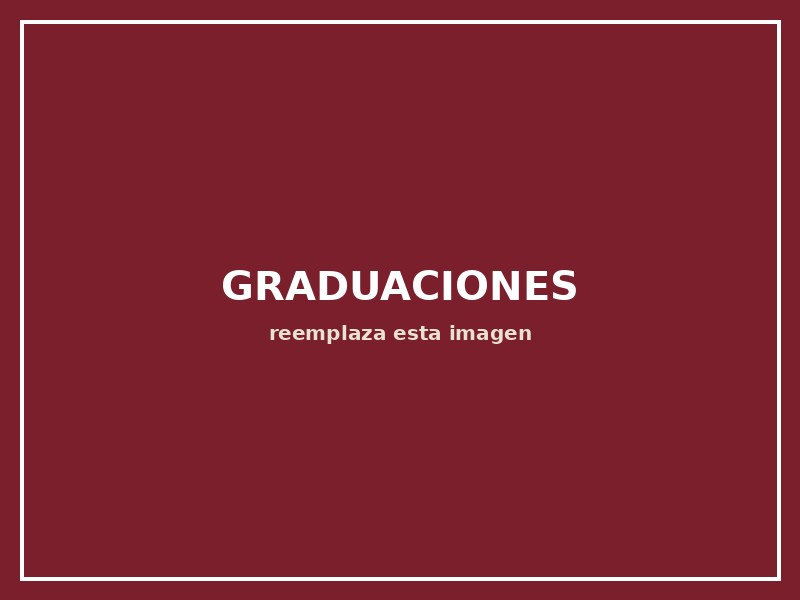

Beato Cosme Spessotto, OFM
Nuestra institución lleva el nombre del Beato Cosme Spessotto, sacerdote franciscano nacido en Italia en 1923, quien llegó a El Salvador como misionero en 1950. Sirvió durante casi tres décadas como párroco de San Juan Nonualco, en el departamento de La Paz, donde fundó una escuela parroquial y acompañó a la comunidad con entrega y sencillez.
Fue asesinado el 14 de junio de 1980 mientras oraba en su parroquia, en el contexto del conflicto que vivía El Salvador. La Iglesia Católica lo declaró beato el 22 de enero de 2022, reconociendo su martirio en defensa de la fe y de su comunidad.
[Agregar aquí la relación específica entre el Beato Cosme Spessotto y la fundación de esta institución educativa, así como cualquier frase real que se desee destacar.]
Un espíritu que sigue formando
Entrega humilde
Su cercanía con las familias más sencillas inspira nuestro trato cotidiano con cada estudiante.
Identidad franciscana
El carisma franciscano orienta la formación espiritual que ofrecemos desde Parvularia hasta Noveno Grado.
Compromiso local
Su vínculo con la comunidad de La Paz refleja la cercanía que buscamos con las familias del distrito.
Descubre nuestra identidad institucional
Misión, visión y valores que heredan este mismo espíritu.